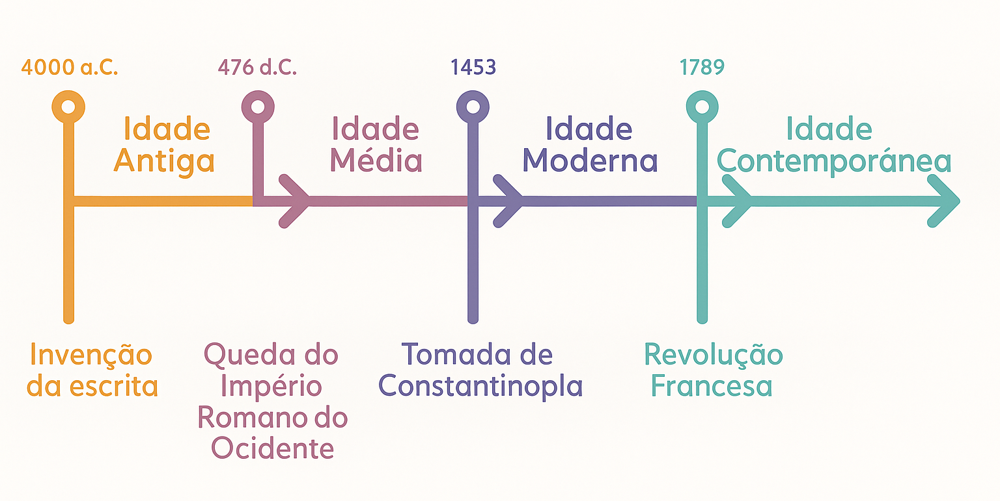

Linha do Tempo:
Pré-História
A Pré-História é o período que antecede a invenção da escrita, marcando o início da trajetória humana na Terra. Estende-se desde o surgimento dos primeiros hominídeos até aproximadamente
3.500 a.C., quando surgem os primeiros registros escritos. Durante esse extenso intervalo de tempo, a humanidade passou por transformações significativas em seus modos de vida, organização
social e desenvolvimento tecnológico.
A Pré-História é tradicionalmente dividida em três grandes períodos:
1. Paleolítico (Idade da Pedra Lascada): Este é o período mais
longo da Pré-História, abrangendo desde o aparecimento dos primeiros hominídeos até cerca de 10.000 a.C. Durante o Paleolítico, os seres humanos eram nômades, vivendo da caça, pesca e coleta
de frutos. Utilizavam ferramentas rudimentares feitas de pedra lascada, ossos e madeira. Foi nesse período que ocorreu o domínio do fogo, uma conquista crucial para o aquecimento, proteção e
preparo de alimentos. Além disso, surgem as primeiras manifestações artísticas, como as pinturas rupestres encontradas em cavernas.
2. Neolítico (Idade da Pedra Polida): Iniciado por
volta de 10.000 a.C., o Neolítico marca uma revolução na forma de vida humana. Com o desenvolvimento da agricultura e a domesticação de animais, as comunidades tornam-se sedentárias,
estabelecendo-se próximas a rios e formando os primeiros vilarejos. As ferramentas tornam-se mais sofisticadas, com a pedra sendo polida para a confecção de utensílios mais eficientes. Surgem
também a cerâmica, a tecelagem e as primeiras formas de organização social mais complexas.
3. Idade dos Metais: A partir de aproximadamente 5.000 a.C., inicia-se a Idade dos Metais,
caracterizada pelo uso de metais como cobre, bronze e, posteriormente, ferro na fabricação de ferramentas e armas. Esse avanço tecnológico propiciou o crescimento das cidades e o surgimento
das primeiras civilizações organizadas, com estruturas políticas, sociais e econômicas mais elaboradas. A escrita é desenvolvida nesse período, marcando o fim da Pré-História e o início da
História propriamente dita.
A arte na Pré-História: As expressões artísticas da Pré-História, como as pinturas rupestres, esculturas e objetos cerâmicos, são fontes valiosas para
compreender a vida e as crenças dos povos antigos. Essas manifestações não tinham apenas um propósito estético, mas também funcional e simbólico, refletindo aspectos do cotidiano, da
espiritualidade e das relações sociais da época.
Concluindo: Estudar a Pré-História é essencial para entender as origens da humanidade e as bases das sociedades contemporâneas. Através
da análise de vestígios arqueológicos e fósseis, é possível reconstruir a trajetória humana, desde os primeiros agrupamentos nômades até o surgimento das civilizações complexas. Esse
conhecimento nos permite valorizar as conquistas e desafios enfrentados por nossos ancestrais ao longo de milênios.
Idade Média
A Idade Média, também conhecida como período medieval, é uma das três grandes divisões da história europeia, situada entre a Antiguidade e a Idade Moderna. Estendendo-se aproximadamente do
século V ao século XV, esse período foi marcado por transformações significativas nas estruturas políticas, sociais, econômicas e culturais da Europa.
A Idade Média é tradicionalmente
dividida em dois grandes períodos:
1. Alta Idade Média (séculos V ao X): Iniciada com a queda do Império Romano do Ocidente em 476 d.C., a Alta Idade Média foi caracterizada pela formação
de reinos bárbaros, ruralização da sociedade e consolidação do cristianismo como força unificadora. Durante esse período, a Europa enfrentou invasões de diversos povos, como os vikings, magiares
e sarracenos, que contribuíram para a fragmentação política e o declínio das cidades.
2. Baixa Idade Média (séculos XI ao XV): A partir do século XI, a Europa experimentou um renascimento
urbano e comercial, impulsionado pelo crescimento populacional, avanços na agricultura e intensificação das trocas comerciais. Esse período também testemunhou o fortalecimento das monarquias
nacionais, o surgimento das universidades e o florescimento da cultura gótica.
Estrutura Política e Social: O feudalismo foi o sistema político, econômico e social predominante na Idade
Média. Baseava-se na posse da terra, onde o rei concedia feudos a nobres em troca de lealdade e serviços militares. Esses nobres, por sua vez, ofereciam proteção aos servos, que trabalhavam nas
terras em troca de subsistência. A sociedade era estruturada em estamentos: clero, nobreza e servos, com mobilidade social praticamente inexistente.
Suserania e Vassalagem: As relações
de suserania e vassalagem eram fundamentais no sistema feudal. O suserano concedia terras ao vassalo, que em troca jurava fidelidade e prestava serviços militares. Essas alianças reforçavam a
descentralização do poder e a fragmentação política característica da época.
Papel da Igreja: A Igreja Católica exerceu enorme influência durante a Idade Média, atuando como autoridade
espiritual e temporal. Controlava vastas extensões de terra, arrecadava impostos e ditava normas morais e sociais. A aliança entre a Igreja e os reinos bárbaros consolidou o cristianismo como
religião dominante na Europa.
Cruzadas: Entre os séculos XI e XIII, a Igreja promoveu as Cruzadas, expedições militares com o objetivo de reconquistar Jerusalém e outros territórios
sagrados sob domínio muçulmano. Embora nem todas tenham alcançado seus objetivos, as Cruzadas intensificaram o contato entre o Oriente e o Ocidente, promovendo intercâmbios culturais e
comerciais.
Economia e Vida Cotidiana: A economia medieval era predominantemente agrária e de subsistência. Os servos cultivavam as terras dos senhores feudais, pagando tributos em forma
de produtos ou trabalho. Com o tempo, surgiram feiras e mercados, impulsionando o comércio e o renascimento das cidades. A vida cotidiana era marcada por dificuldades, como doenças, fome e
guerras. A expectativa de vida era baixa, e a maioria da população vivia em condições precárias. A cultura medieval era profundamente influenciada pela religião. A maioria das obras literárias,
artísticas e filosóficas tinha temática religiosa. As universidades, surgidas a partir do século XII, tornaram-se centros de ensino e preservação do conhecimento, com destaque para a escolástica,
que buscava conciliar fé e razão. A arquitetura gótica, caracterizada por arcos ogivais, vitrais coloridos e grandes catedrais, floresceu nesse período, simbolizando a grandiosidade da fé cristã.
A partir do século XIV, a Europa enfrentou uma série de crises que abalaram as estruturas medievais:
1. Peste Negra: Entre 1347 e 1351, a peste bubônica dizimou cerca de um terço
da população europeia, causando profundo impacto social e econômico.
2. Crise do Feudalismo: A escassez de mão de obra e as revoltas camponesas enfraqueceram o sistema feudal, abrindo caminho
para novas formas de organização social e econômica.
3. Guerra dos Cem Anos: Conflito entre França e Inglaterra que durou de 1337 a 1453, marcado por disputas dinásticas e territoriais,
contribuindo para o fortalecimento das monarquias nacionais.
Concluindo: A Idade Média foi um período complexo e multifacetado, marcado por transformações profundas que moldaram a Europa.
Apesar de frequentemente associada a estagnação e obscurantismo, a era medieval foi palco de importantes desenvolvimentos culturais, sociais e políticos que influenciaram significativamente os
períodos subsequentes da história.
Idade Moderna
A Idade Moderna, compreendida entre os séculos XV e XVIII, foi um período de profundas transformações na Europa e no mundo, marcando a transição do feudalismo para o capitalismo e o surgimento
de novas estruturas políticas, econômicas, sociais e culturais. Este período é caracterizado por eventos significativos como o Renascimento, as Grandes Navegações, a Reforma Protestante, o
Absolutismo e o desenvolvimento do mercantilismo.
Contexto Histórico e Transição do Feudalismo para o Capitalismo: A Idade Moderna teve início com eventos marcantes como a tomada de
Constantinopla pelos turcos otomanos em 1453, que encerrou a Idade Média, e se estendeu até a Revolução Francesa em 1789. Durante esse período, ocorreu a transição do sistema feudal, baseado na
agricultura e na descentralização do poder, para o capitalismo, caracterizado pela economia de mercado e pela centralização política. O comércio expandiu-se significativamente, impulsionado pelas
Grandes Navegações e pelo colonialismo, que permitiram a exploração de recursos e a expansão das rotas comerciais europeias.
Grandes Navegações e Expansão Marítima: As Grandes Navegações
foram impulsionadas pela busca de novas rotas comerciais para as especiarias do Oriente, especialmente após a tomada de Constantinopla, que dificultou o acesso terrestre ao Oriente. Portugal e
Espanha lideraram essas explorações marítimas, com figuras como Vasco da Gama, que alcançou a Índia em 1498, e Cristóvão Colombo, que chegou à América em 1492. Essas expedições resultaram na
descoberta de novas terras, no estabelecimento de colônias e na expansão do comércio europeu.
Renascimento Cultural e Científico: O Renascimento foi um movimento cultural que resgatou os
valores da Antiguidade Clássica, promovendo o humanismo, o racionalismo e o antropocentrismo. Esse período viu avanços significativos nas artes, na literatura e nas ciências, com figuras como
Leonardo da Vinci, Michelangelo, Galileu Galilei e Nicolau Copérnico. A invenção da imprensa por Johannes Gutenberg em 1455 facilitou a disseminação do conhecimento e das ideias renascentistas.
Reforma Protestante e Contrarreforma: A Reforma Protestante, iniciada por Martinho Lutero em 1517, contestou práticas da Igreja Católica, como a venda de indulgências, e levou à criação
de novas denominações cristãs, como o luteranismo, o calvinismo e o anglicanismo. Em resposta, a Igreja Católica promoveu a Contrarreforma, que incluiu o Concílio de Trento e a criação da Companhia
de Jesus, visando reformar a Igreja e combater a propagação do protestantismo.
Absolutismo Monárquico: Durante a Idade Moderna, consolidou-se o absolutismo, sistema político em que o poder
do monarca é centralizado e absoluto. Reis como Luís XIV da França exemplificaram esse modelo, governando com autoridade suprema e justificando seu poder pelo direito divino. O absolutismo foi
sustentado por uma aliança entre a monarquia e a burguesia, que buscava estabilidade política para o desenvolvimento econômico.
Mercantilismo e Economia Moderna: O mercantilismo foi a
política econômica predominante na Idade Moderna, caracterizada pela intervenção estatal na economia, pelo acúmulo de metais preciosos e pela balança comercial favorável. Os Estados incentivaram
a exportação, impuseram tarifas sobre importações e estabeleceram monopólios comerciais. Essa política visava fortalecer o poder do Estado e acumular riquezas, preparando o terreno para o
desenvolvimento do capitalismo industrial.
Revolução Científica: A Revolução Científica foi marcada por avanços significativos no conhecimento científico e na metodologia de pesquisa.
Cientistas como Copérnico, Galileu, Kepler e Newton desafiaram concepções tradicionais e desenvolveram teorias que transformaram a compreensão do universo. A ênfase na observação, na experimentação
e na razão contribuiu para o desenvolvimento da ciência moderna.
Concluindo: A Idade Moderna foi um período de intensas transformações que moldaram o mundo contemporâneo. As mudanças
políticas, econômicas, sociais e culturais desse período estabeleceram as bases para a sociedade moderna, com o surgimento do Estado-nação, o desenvolvimento do capitalismo, a valorização da razão
e o avanço do conhecimento científico. Compreender a Idade Moderna é essencial para entender as origens e as dinâmicas do mundo atual.
Idade Contemporânea
1. Revolução Francesa: A Revolução Francesa, iniciada em 1789, marcou o colapso do Antigo Regime na França. Movida por ideais de liberdade, igualdade e fraternidade, a população francesa
rebelou-se contra a monarquia absolutista, os privilégios da nobreza e do clero, e as injustiças sociais. Eventos como a Queda da Bastilha simbolizaram a luta por uma sociedade mais justa.
A revolução resultou na Declaração dos Direitos do Homem e do Cidadão e na execução do rei Luís XVI, instaurando uma república e influenciando movimentos democráticos em todo o mundo.
2. Revolução Industrial: A Revolução Industrial, iniciada na Inglaterra no século XVIII, transformou profundamente a economia e a sociedade. A introdução de máquinas e a mecanização da produção
aumentaram a eficiência, mas também levaram à exploração do trabalho, inclusive infantil, e à urbanização acelerada. Novas classes sociais emergiram, como a burguesia industrial e o proletariado,
enquanto surgiam ideologias como o socialismo e o liberalismo, em resposta às mudanças provocadas pela industrialização.
3. Imperialismo e Neocolonialismo: No século XIX, as potências
europeias intensificaram a expansão colonial, motivadas por interesses econômicos, políticos e ideológicos. O imperialismo resultou na dominação de vastas regiões da África e da Ásia, levando à
exploração dos recursos naturais e à imposição de culturas e sistemas europeus sobre as populações locais. Conferências como a de Berlim (1884-1885) formalizaram a partilha da África, ignorando
as fronteiras étnicas e culturais existentes, cujas consequências são sentidas até hoje.
4. Primeira Guerra Mundial: A Primeira Guerra Mundial (1914-1918) foi um conflito global envolvendo
as principais potências mundiais, divididas em dois blocos: a Tríplice Entente e a Tríplice Aliança. Causada por rivalidades imperialistas, nacionalismos exacerbados e alianças militares, a guerra
resultou em milhões de mortes e destruições. O Tratado de Versalhes impôs duras sanções à Alemanha, criando ressentimentos que contribuíram para a eclosão da Segunda Guerra Mundial.
5.
Revolução Russa: A Revolução Russa de 1917 derrubou o regime czarista e instaurou o primeiro estado socialista do mundo. Liderados por Lenin, os bolcheviques prometeram "paz, terra e pão" ao povo
russo, nacionalizando terras e indústrias. A União Soviética emergiu como uma potência mundial, influenciando movimentos comunistas e a geopolítica global ao longo do século XX.
6.
Entreguerras: O período entre as duas guerras mundiais foi marcado por instabilidade econômica, como a Grande Depressão de 1929, e pelo surgimento de regimes totalitários. Na Itália, Mussolini
instaurou o fascismo; na Alemanha, Hitler estabeleceu o nazismo; e na União Soviética, Stalin consolidou o stalinismo. Esses regimes suprimiram liberdades individuais, promoveram o culto à
personalidade e prepararam o cenário para a Segunda Guerra Mundial.
7. Segunda Guerra Mundial: A Segunda Guerra Mundial (1939-1945) foi o maior conflito armado da história, envolvendo
países de todos os continentes. Iniciada com a invasão da Polônia pela Alemanha nazista, a guerra resultou em aproximadamente 70 milhões de mortes. O Holocausto, perpetrado pelos nazistas,
exterminou cerca de 6 milhões de judeus. O conflito terminou com a rendição da Alemanha e do Japão, após os bombardeios atômicos de Hiroshima e Nagasaki.
8. Guerra Fria: Após a Segunda
Guerra Mundial, o mundo dividiu-se em dois blocos: o capitalista, liderado pelos Estados Unidos, e o socialista, liderado pela União Soviética. A Guerra Fria foi caracterizada por uma corrida
armamentista, disputas ideológicas e conflitos indiretos, como as guerras da Coreia e do Vietnã. A queda do Muro de Berlim em 1989 simbolizou o fim da Guerra Fria e a vitória do modelo capitalista
liberal.
9. Descolonização da África e da Ásia: No pós-guerra, movimentos nacionalistas ganharam força na África e na Ásia, resultando na independência de várias colônias europeias. Lideranças
como Gandhi, na Índia, e Kwame Nkrumah, em Gana, foram fundamentais nesse processo. Apesar da independência política, muitos desses países enfrentaram desafios econômicos e sociais, além de
interferências externas durante a Guerra Fria.
10. Globalização: A globalização intensificou as interconexões econômicas, culturais e tecnológicas entre os países. Avanços nas comunicações
e nos transportes facilitaram o fluxo de informações, bens e pessoas. No entanto, também surgiram desafios, como a desigualdade econômica, a homogeneização cultural e questões ambientais globais.